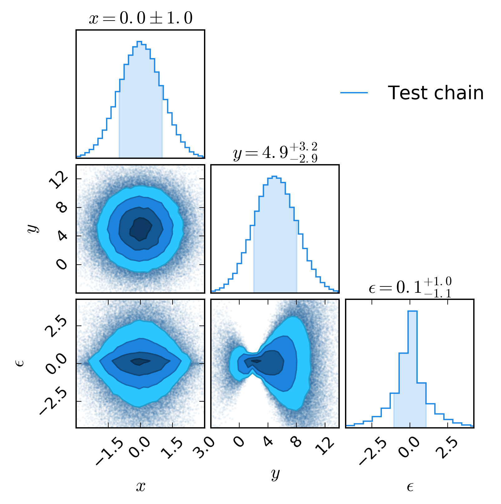
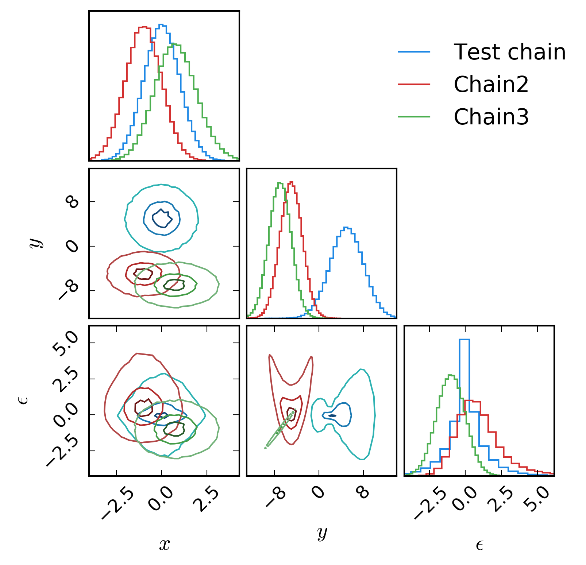
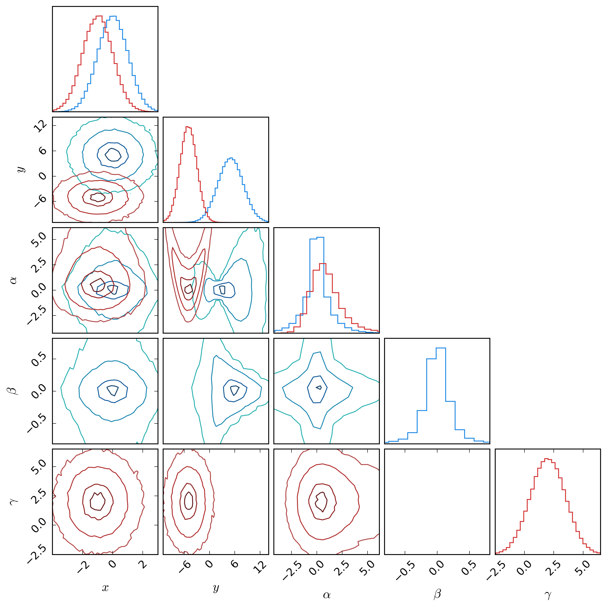
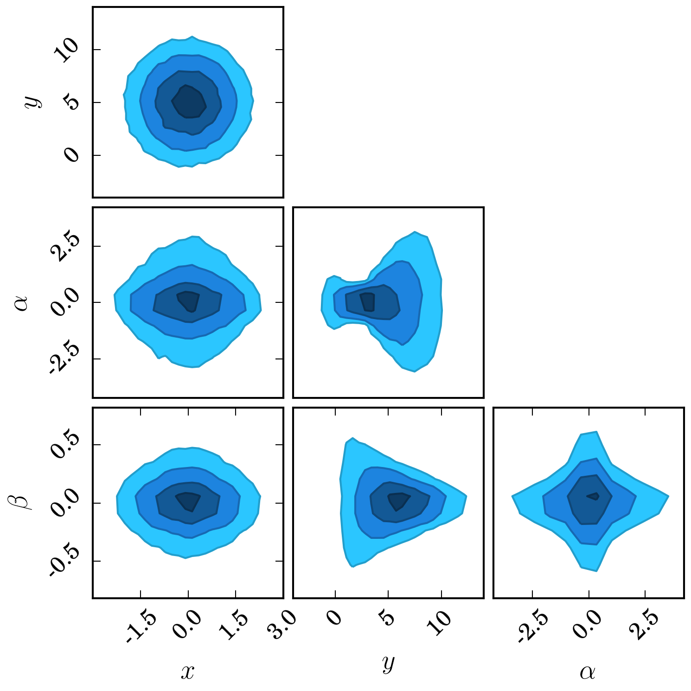
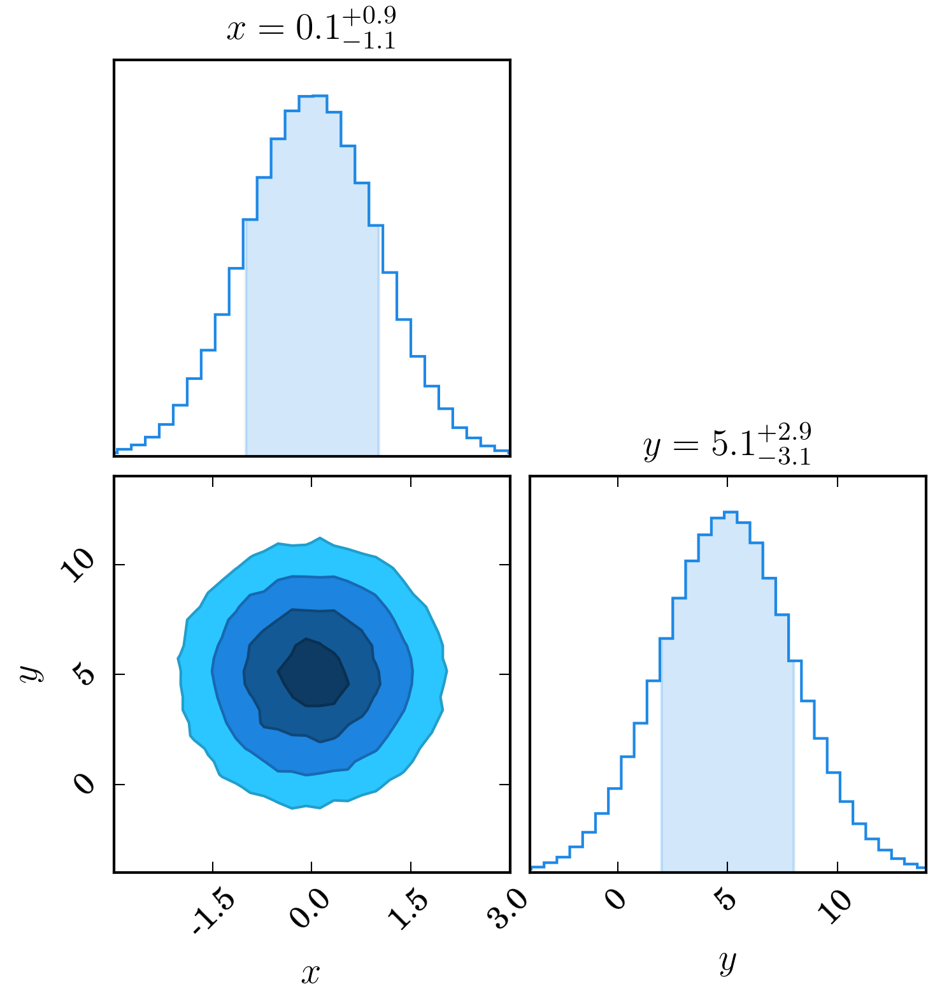
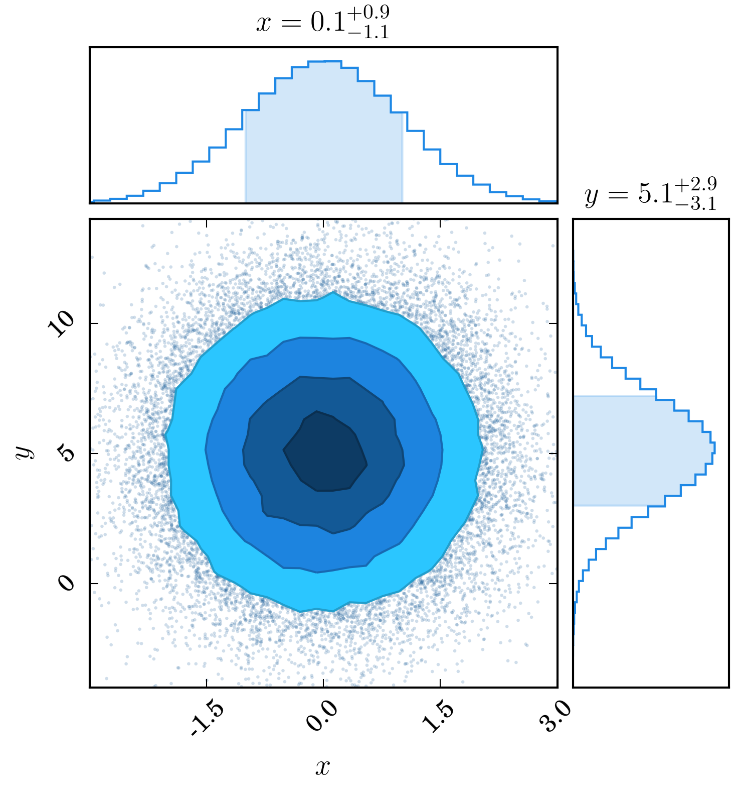
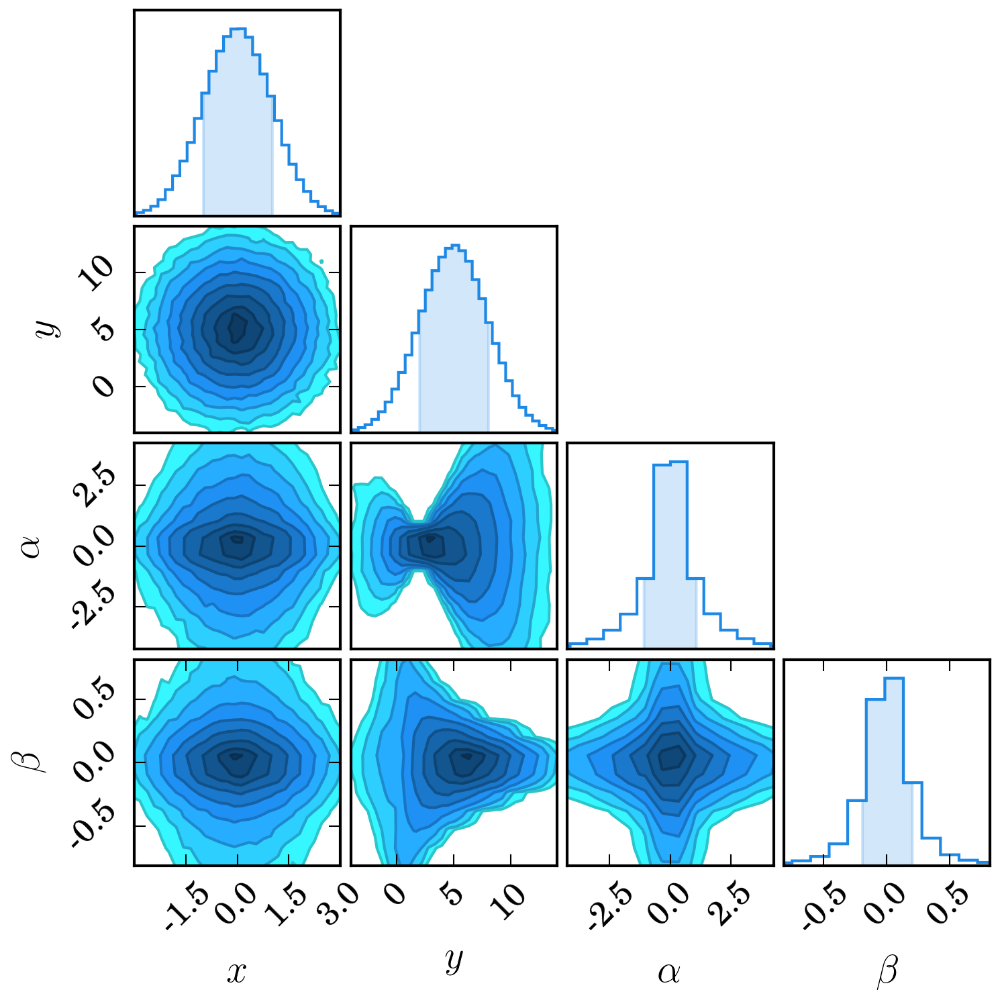
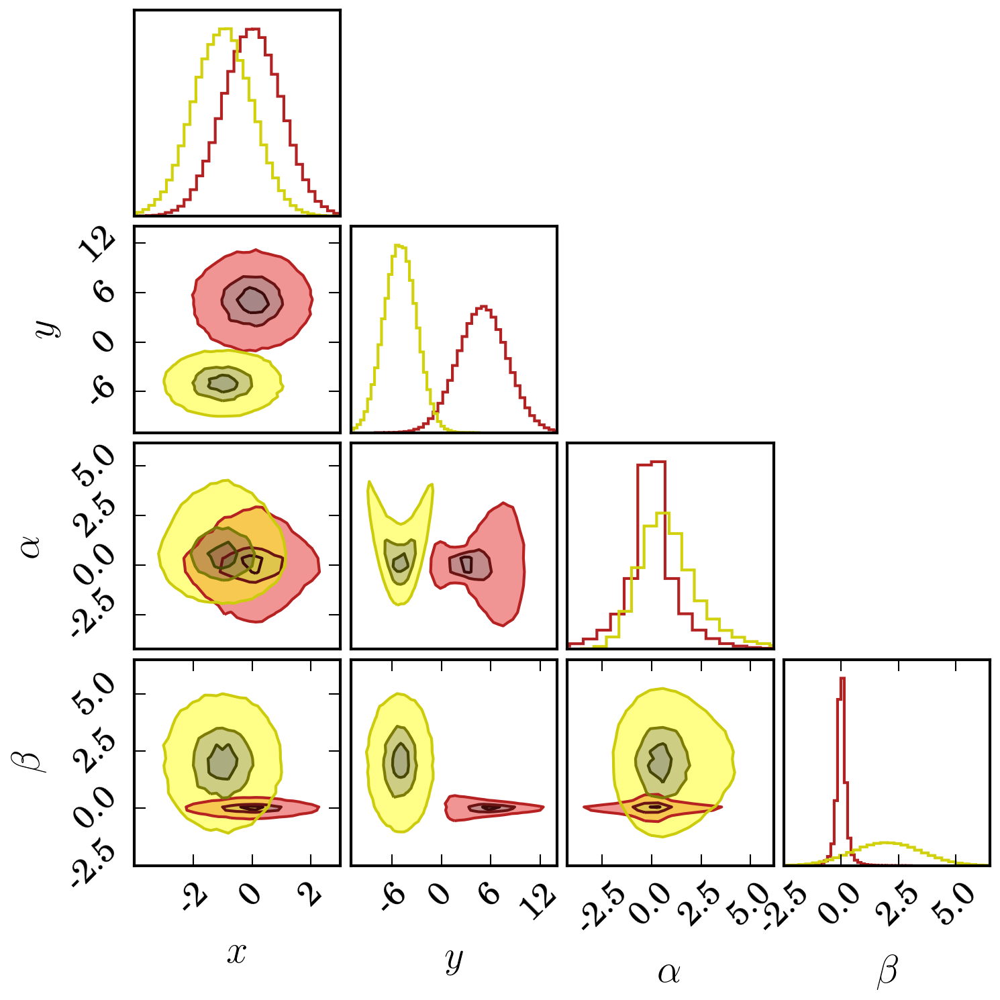
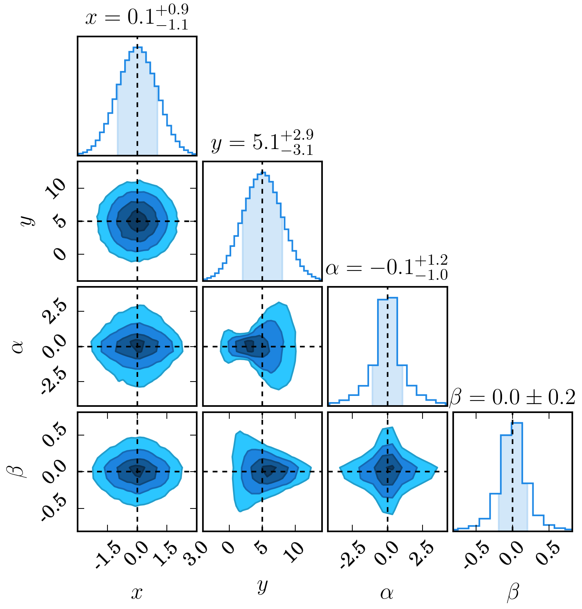
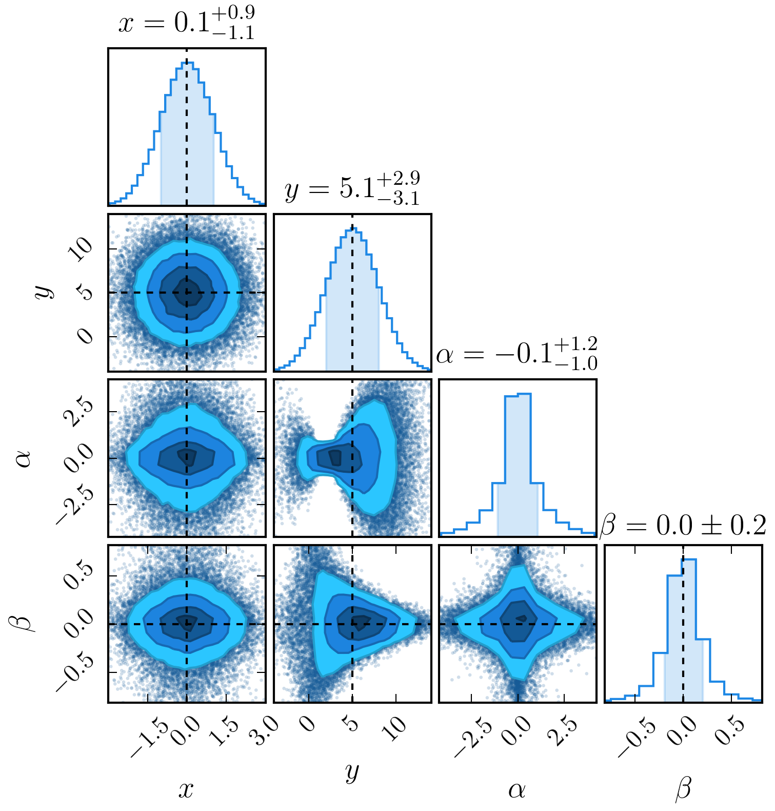

dessn.chain package¶
Submodules¶
dessn.chain.chain module¶
-
class
dessn.chain.chain.ChainConsumer[source]¶ Bases:
objectA class for consuming chains produced by an MCMC walk
-
add_chain(chain, parameters=None, name=None)[source]¶ Add a chain to the consumer.
Parameters: chain : str|ndarray
The chain to load. Normally a
numpy.ndarray, but can also accept a string. If a string is found, it interprets the string as a filename and attempts to load it in.parameters : list[str], optional
A list of parameter names, one for each column (dimension) in the chain.
name : str, optional
The name of the chain. Used when plotting multiple chains at once.
Returns: ChainConsumer
Itself, to allow chaining calls.
-
configure_bar(summary=None)[source]¶ Configure the bar plots showing the marginalised distributions. If you do not call this explicitly, the
plot()method will invoke this method automatically.- summary : bool, optional
- If overridden, sets whether parameter summaries should be set as axis titles. Will not work if you have multiple chains
-
configure_contour(sigmas=None, cloud=None, contourf=None, contourf_alpha=1.0)[source]¶ Configure the default variables for the contour plots. If you do not call this explicitly, the
plot()method will invoke this method automatically.Please ensure that you call this method after adding all the relevant datae to the chain consumer, as the consume changes configuration values depending on the presupplied data.
Parameters: sigmas : np.array, optional
The \(\sigma\) contour levels to plot. Defaults to [0.5, 1, 2, 3]. Number of contours shown decreases with the number of chains to show.
cloud : bool, optional
If set, overrides the default behaviour and plots the cloud or not
contourf : bool, optional
If set, overrides the default behaviour and plots filled contours or not
contourf_alpha : float, optional
Filled contour alpha value override.
-
configure_general(bins=None, flip=True, rainbow=None, colours=None, serif=True, plot_hists=True, max_ticks=5)[source]¶ - Configure the general plotting parameters common across the bar and contour plots. If you do not call this explicitly,
- the
plot()method will invoke this method automatically.
Parameters: bins : int, optional
The number of bins to use. By default uses :math:`
rac{sqrt{n}}{10}`, where :math:`n` are the number of data points.
- flip : bool, optional
Set to false if, when plotting only two parameters, you do not want it to rotate the histogram so that it is horizontal.
- rainbow : bool, optional
Set to True to force use of rainbow colours
- colours : list[str(hex)], optional
Provide a list of colours to use for each chain. If you provide more chains than colours, you will get the rainbow colour spectrum.
- serif : bool, optional
Whether to display ticks and labels with serif font.
- plot_hists : bool, optional
Whether to plot marginalised distributions or not
- max_ticks : int, optional
The maximum number of ticks to use on the plots
-
configure_truth(**kwargs)[source]¶ Configure the arguments passed to the
axvlineandaxhlinemethods when plotting truth values. If you do not call this explicitly, theplot()method will invoke this method automatically.Recommended to set the parameters
linestyle,colorand/oralphaif you want some basic control.Default is to use an opaque black dashed line.
-
get_parameter_text(lower, maximum, upper)[source]¶ Generates LaTeX appropriate text from marginalised parameter bounds.
Parameters: lower : float
The lower bound on the parameter
maximum : float
The value of the parameter with maximum probability
upper : float
The upper bound on the parameter
-
get_summary()[source]¶ Gets a summary of the marginalised parameter distributions.
Returns: list of dictionaries
One entry per chain, parameter bounds stored in dictionary with parameter as key
-
plot(figsize='COLUMN', parameters=None, extents=None, filename=None, display=False, truth=None)[source]¶ Plot the chain
Parameters: figsize : str|tuple(float), optional
The figure size to generate. Accepts a regular two tuple of size in inches, or one of several key words. The default value of
COLUMNcreates a figure of appropriate size of insertion into an A4 LaTeX document in two-column mode.PAGEcreates a full page width figure. String arguments are not case sensitive.parameters : list[str], optional
If set, only creates a plot for those specific parameters
extents : list[tuple[float]] or dict[str], optional
Extents are given as two-tuples. You can pass in a list the same size as parameters (or default parameters if you don’t specify parameters), or as a dictionary.
filename : str, optional
If set, saves the figure to this location
display : bool, optional
If True, shows the figure using
plt.show().truth : list[float] or dict[str], optional
A list of truth values corresponding to parameters, or a dictionary of truth values indexed by key
Returns: figure
the matplotlib figure
-
dessn.chain.demoOneChain module¶
-
class
dessn.chain.demoOneChain.DemoOneChain[source]¶ The single chain demo for Chain Consumer. Dummy class used to get documentation caught by
sphinx-apidoc, it servers no other purpose.Running this file in python creates a random data set, representing a single MCMC chain, such as you might get from
emcee.First, we create a consumer and load the chain, and tell it to plot the chain without knowing the parameter labels. It is set to so that the plot should pop up. To continue running the code, close the plot.
The second thing we do is create a different consumer, and load the chain into it. We also supply the parameter labels. By default, as we only have a single chain, contours are filled, the marginalised histograms are shaded, and the best fit parameter bounds are shown as axis titles.
The plot for this is saved to the png file below:

dessn.chain.demoThreeChains module¶
-
class
dessn.chain.demoThreeChains.DemoThreeChains[source]¶ The multiple chain demo for Chain Consumer. Dummy class used to get documentation caught by
sphinx-apidoc, it servers no other purpose.Running this file in python creates three random data sets, representing three separate chains.
First, we create a consumer and load the first two chains, and tell it to plot with filled contours.
The second thing we do is create a different consumer, and load all three chains into it. We also supply the parameter labels the first time we load in a chain. The plot for this is saved to the png file below:

dessn.chain.demoTwoDisjointChains module¶
-
class
dessn.chain.demoTwoDisjointChains.DemoTwoDisjointChains[source]¶ The multiple chain demo for Chain Consumer. Dummy class used to get documentation caught by
sphinx-apidoc, it servers no other purpose.Running this file in python creates two random data sets, representing two separate chains, for two separate models.
It is sometimes the case that we wish to compare models which have partially overlapping parameters. For example, we might fit a model which depends has cosmology dependend on \(\Omega_m\) and \(\Omega_\Lambda\), where we assume \(w = 1\). Alternatively, we might assume flatness, and therefore fix \(\Omega_\Lambda\) but instead vary the equation of state \(w\). The good news is, you can visualise them both at once!
The second thing we do is create a consumer, and load both chains into it. As we have different parameters for each chain we supply the right parameters for each chain. The plot for this is saved to the png file below:

dessn.chain.demoVarious module¶
-
class
dessn.chain.demoVarious.DemoVarious[source]¶ Bases:
objectThe demo for various functions and usages of Chain Consumer.
This file should show some examples of how to use ChainConsumer in more unusual ways with extra customisation.
The methods of this class should provide context as to what is being done.
-
various1_no_histogram()[source]¶ Plot data without histogram or cloud. For those liking the minimalistic approach

-
various2_select_parameters()[source]¶ You can chose to only display a select number of parameters.

-
various3_flip_histgram()[source]¶ YWhen you only display two parameters and don’t disable histograms, your plot will look different.
You can suppress this by passing to
flip=FalsetoChainConsumer.configure_general(). See the commented out line in code for the actual line to disable this.The max number of ticks is also modified in this example.

-
various4_summaries()[source]¶ If there is only one chain to analyse, and you only chose to plot a small number of parameters, the parameter summary will be shown above the relevent axis. You can set this to always show or always not show by using the
force_summaryflag. Also, here we demonstrate more \(\sigma\) levels!
-
various5_custom_colours()[source]¶ You can supply custom colours to the plotting. Be warned, if you have more chains than colours, you will get a rainbow instead!
Note that, due to colour scaling, you must supply custom colours as full six digit hex colours, such as
#A87B20.As colours get scaled, it is a good idea to pick something neither too light, dark, or saturated.
In this example, I also force contour filling and set contour filling opactiy to 0.5, so we can see overlap.

-
various6_truth_values()[source]¶ The reward for scrolling down so far, the first customised argument that will be frequently used; truth values.
Truth values can be given as a list the same length of the input parameters, or as a dictionary, keyed by the parameters.
In the code there are two examples. The first, where a list is passed in, and the second, where an incomplete dictionary of truth values is passed in. In the second case, customised values for truth line plotting are used. The figures are respectively

-